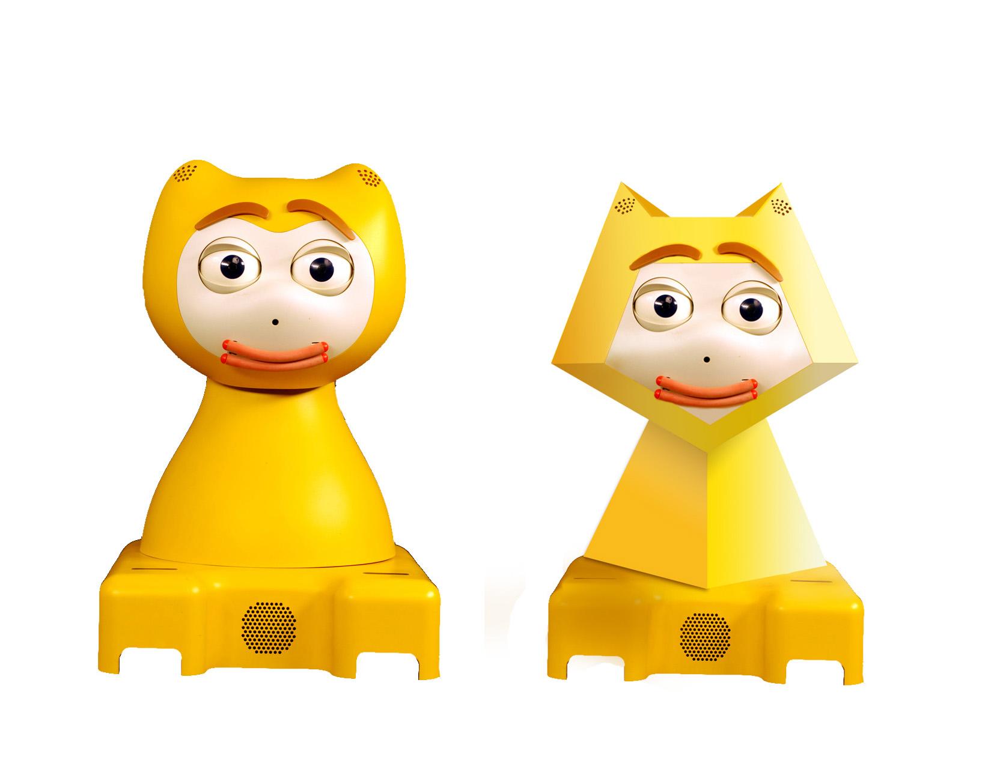
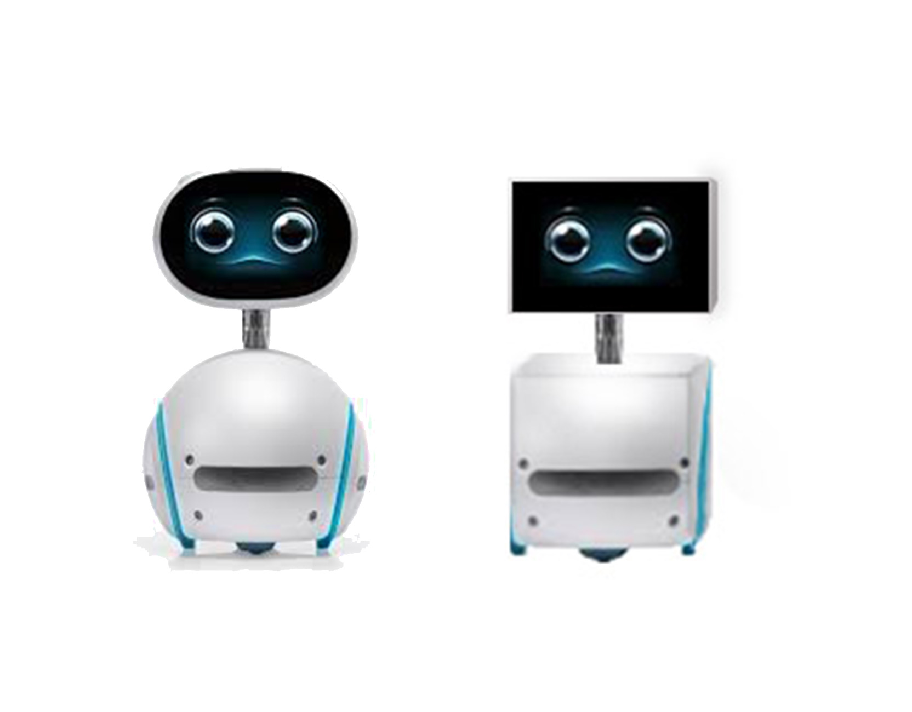
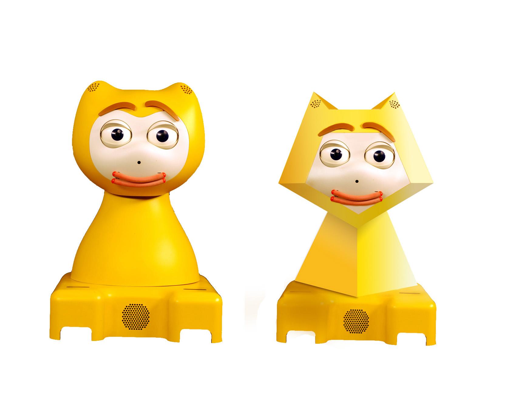
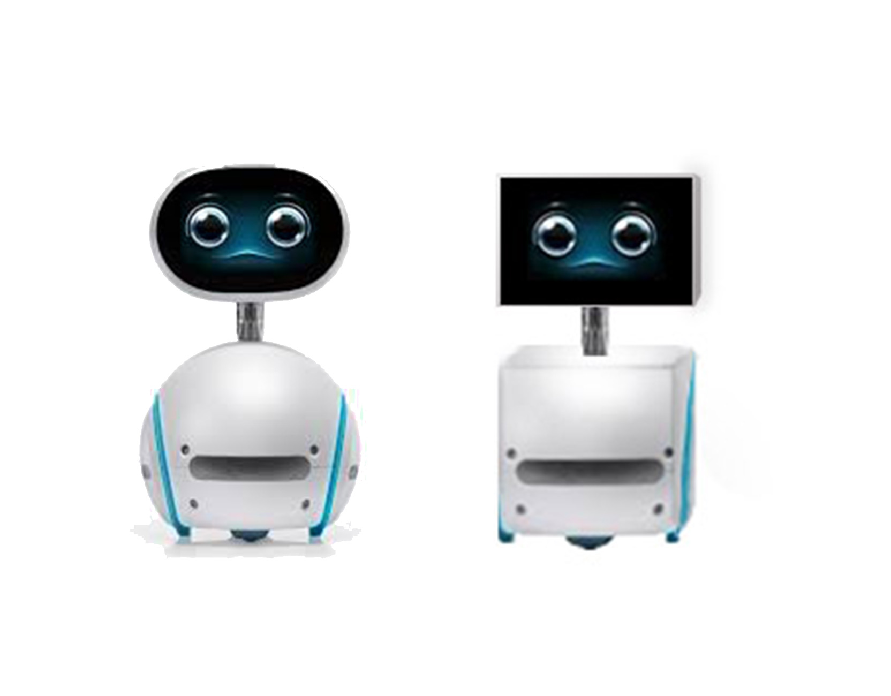

Robots' appearance and interface design strongly influence users' acceptance and functional expectation. Bouba/kiki effect is a non-arbitrary mapping between speech sounds and the visual shape of objects. Based on the theory, I recreate several launched robots with sharp figures to explore whether the effect exists on Human-Robot interface design.
Research topic
The method introduced in this paper aims at helping deep learning practitioners faced with an overfit problem. The idea is to replace, in a multi-branch network, the standard summation of parallel branches with a stochastic affine combination. Applied to 3-branch residual networks, shake-shake regularization improves on the best single shot published results on CIFAR-10 and CIFAR-100 by reaching test errors of 2.86% and 15.85%. Experiments on architectures without skip connections or Batch Normalization show encouraging results and open the door to a large set of
Kiki/Bouba effect
The method introduced in this paper aims at helping deep learning practitioners faced with an overfit problem. The idea is to replace, in a multi-branch network, the standard summation of parallel branches with a stochastic affine combination. Applied to 3-branch residual networks, shake-shake regularization improves on the best single shot published results on CIFAR-10 and CIFAR-100 by reaching test errors of 2.86% and 15.85%. Experiments on architectures without skip connections or Batch Normalization show encouraging results and open the door to a large set of
My role
The method introduced in this paper aims at helping deep learning practitioners faced with an overfit problem. The idea is to replace, in a multi-branch network, the standard summation of parallel branches with a stochastic affine combination. Applied to 3-branch residual networks, shake-shake regularization improves on the best single shot published results on CIFAR-10 and CIFAR-100 by reaching test errors of 2.86% and 15.85%. Experiments on architectures without skip connections or Batch Normalization show encouraging results and open the door to a large set of
Bouba becomes Kiki
 


